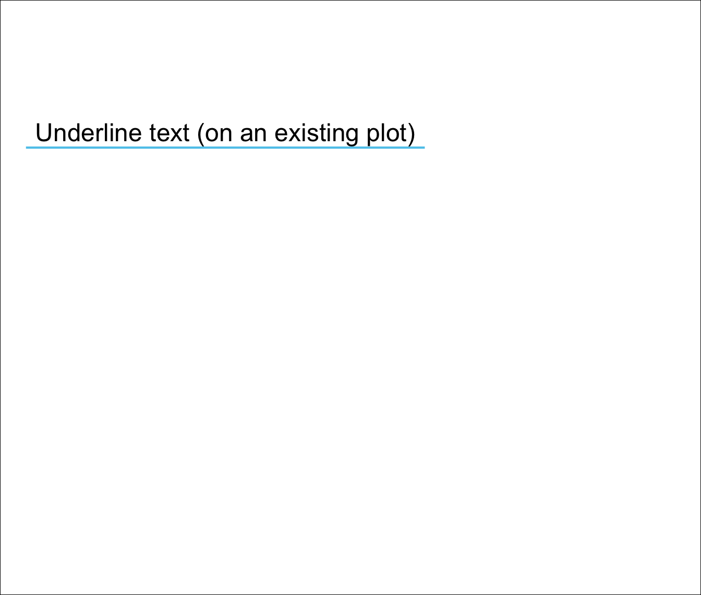
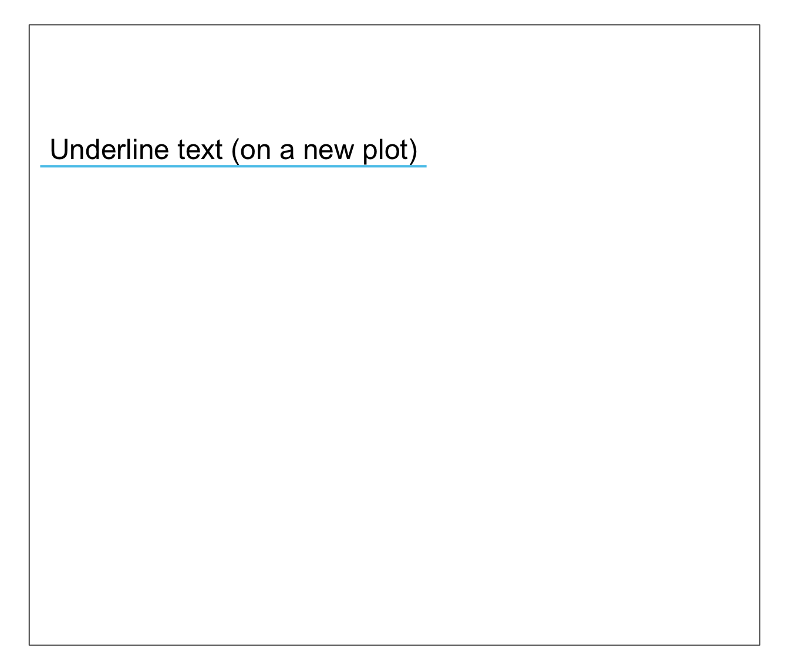
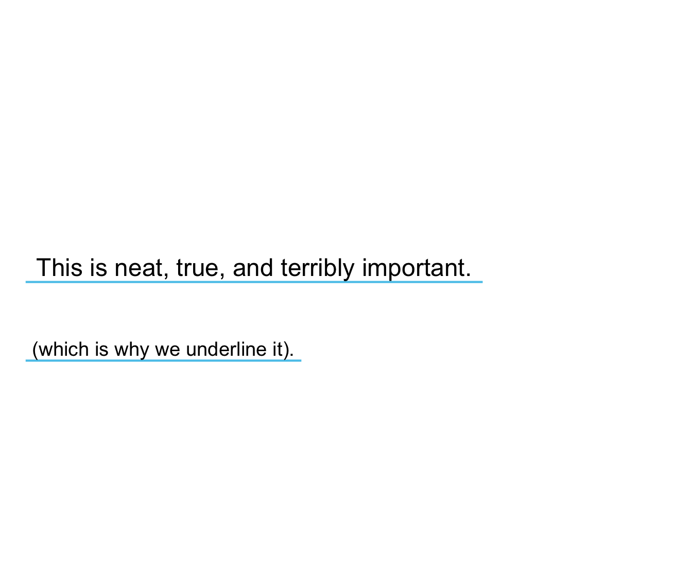

uline.Rduline plots 1 or more text strings (provided as a character vector labels)
to an (existing or new) plot and places a colored line underneath
each label (to underline it).
uline(labels, x = 0, y = 0.55, y_layout = "even", col = "black", col_bg = Seeblau, cex = 1.5, font = 1, new_plot = "none")
| labels | A character vector specifying the text labels to be plotted. |
|---|---|
| x | A numeric vector of x-coordinates at which the
text labels in |
| y | A numeric vector of y-coordinates at which the
text labels in |
| y_layout | A numeric value or vector for the vertical
spacing of labels in |
| col | The color(s) of the text label(s).
Default: |
| col_bg | The color(s) of the line (under the text labels
of |
| cex | Numeric character expansion factor(s),
multiplied by |
| font | The font type(s) to be used.
Default: |
| new_plot | Boolean: Should a new plot be generated?
Set to |
The positions of the text elements in labels can be specified by
providing their coordinates (as x and y arguments) or
by providing an initial position and an y_layout (see below).
Text formatting parameters (like col, col_bg, cex, font)
are recycled to match length(labels).
uline uses the base graphics system graphics::.
uline(labels = "This is a test.", new_plot = "blank") # create a new blank plotuline(labels = "More testing here...", y = .33, col_bg = pal_pinky[[2]]) # add to plot# 2 basic cases: # (a) Underline text on an existing plot: plot(x = 0, y = 0, type = "n", xlim = c(0, 1), ylim = c(0, 1), xlab = "", ylab = "")uline(x = 0, y = .8, labels = "Underline text (on an existing plot)") # add to plot# (b) Underline text on a new plot: uline(x = .02, y = .80, labels = "Underline text (on a new plot)", new_plot = "slide") # create a new plot# Example: lbl_line <- c("This is neat, true, and terribly important.") uline(labels = lbl_line, new_plot = "blank") # create a new plotuline(labels = "(which is why we underline it).", y = .40, cex = 1.2) # add to plot